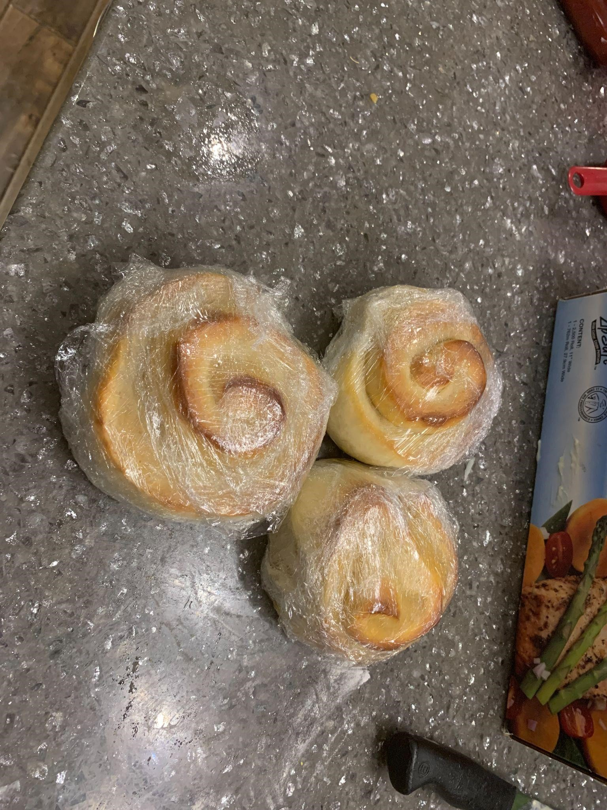
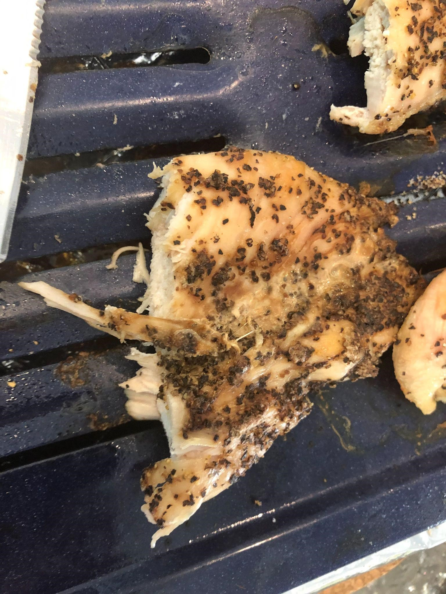
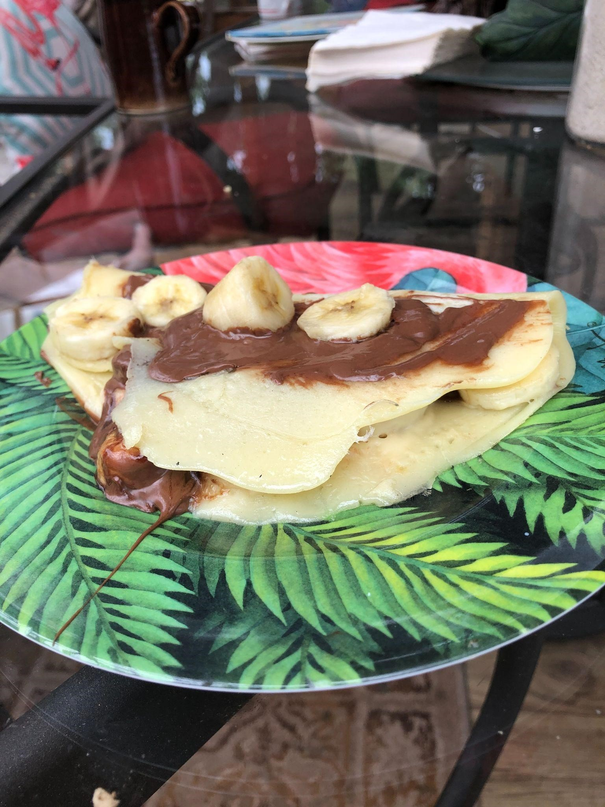

About me
If you have read the title you should know what my name is, but I'm going to tell you anyway, my name is Brett Bowley. I'm pretty sure I can't stretch this into a paragraph because it's just introducing myself. To keep it simple and quick, I grew up in Winnipeg.
I am the third child out of 4 children. I have two sisters and a brother, he is the oldest and one of my sisters is older than me and my other sister is younger than me. I feel like I have the perfect spot of being born because I'm not the youngest and I'm not the oldest that puts me right in the middle. What that means is that all your siblings want to spend time with you because you're not the youngest, you're not the oldest, and you're close to everyone in age. When I was a small child, my brother and I played video games together. I think this is what helped us bond as children. I am also close with my parents and we have a strong bond. One of the things I love to do at home is doing things for my family. Helping people brings me joy because it makes people's lives easier.
I enrolled in PTEC because I needed to find something I love to do. That meant opening new doors to new horizons and that's not the only reason. My whole life, I have had trouble reading & writing and I still do to this day. I can't figure out why I can't read or write, but looking past that I still am able to learn how to program. I thought it was impossible at the beginning, but technology helped me through all of it. That's why I love it so much, it can pretty much do anything you want it to do.
I love technology because it can help people in the world like myself. Technology helps me read and write. That's why technology is so amazing. If any person in this world puts their mind to it, they can solve anything with technology.
I am passionate about games. I love how you can create your own world where you have all the power and you make the story. It's a beautiful thing that people can do that brings their ideas to life.
A favourite hobby of mine is cooking. Recently I've been trying to make sweet buns, but I've never made them before so trying to make round dough balls and injecting pineapple filling didn't work out too well. My second attempt went much better, I turned them into sweet cinnamon buns without cinnamon and I replaced it with a pineapple filling. One of my favourite things to cook is chicken. It can be used in many diverse ways. You can bread it, you can fry it, you can barbecue it, you can turn it into fajitas, you can put it in a salad, or in a casserole. I'm going to end the list before it goes on for too long. I have no pictures of my chicken or my sweet buns/pineapple buns, but here's a picture of a crepe that I made.


